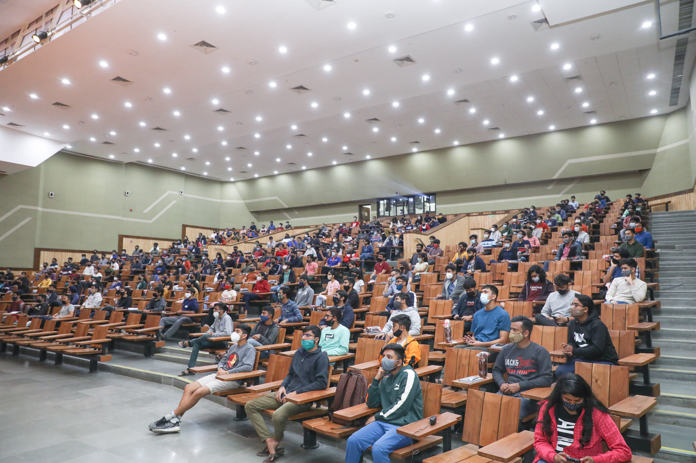
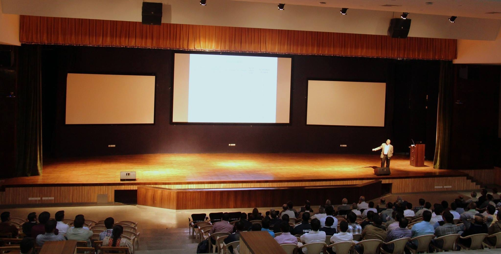
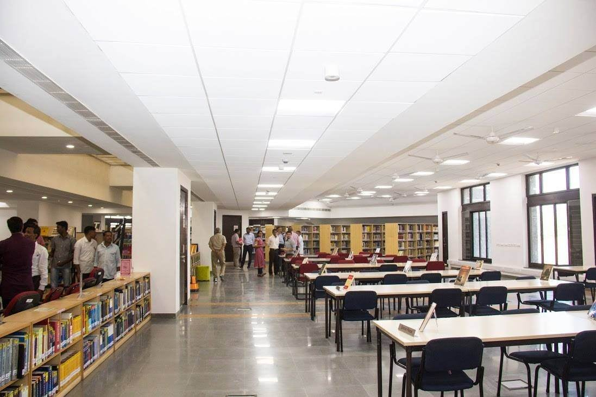
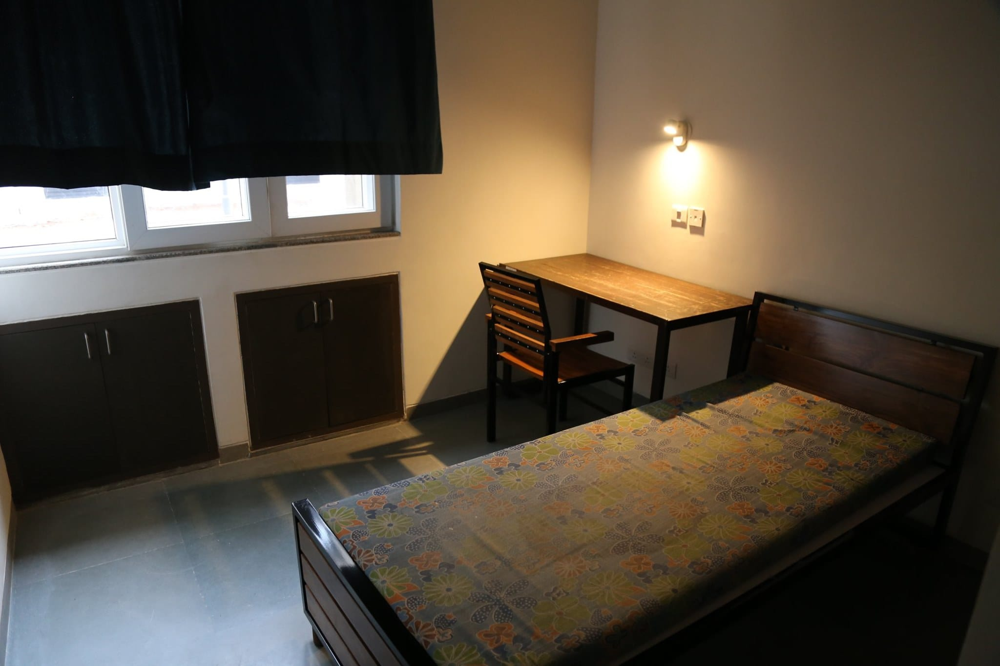

- We’re on your favourite socials!


IIT Gandhinagar Expert's Review and Verdict
Campus at a Glimpse
Established in 2008, IIT Gandhinagar is located in Palaj, Gandhinagar, Gujarat, and has rapidly ascended to prominence in the academic realm. Situated on the banks of the Sabarmati River, the institute has been recognised as India's first 5-star GRIHA LD (Green) campus, signifying its unwavering commitment to minimising environmental impact.
Going beyond green initiatives, IIT Gandhinagar is also the first in the nation to earn a 5-star rating for ensuring safe and healthy food for its students. This shows the institute's dedication to creating a well-rounded and nurturing environment for its community.
IT Gandhinagar offers many different courses, including B.Tech, M.Tech, M.Sc., M.A., and Ph.D. The institute also offers great facilities like air-conditioned classrooms, auditoriums, library, 24/7 Wi-Fi, hostel facilities, among others. Plus, there are many places to eat and hang out near the campus.
IIT Gandhinagar NIRF Ranking
|
Category |
2023 |
2022 |
2021 |
|
Overall |
24 |
37 |
33 |
|
Engineering |
18 |
23 |
22 |
|
Research |
31 |
34 |
39 |
Our take
IIT Gandhinagar has shown consistent improvement in its NIRF ranking over the years. The significant jump in the overall ranking from 37 in 2022 to 24 in 2023 and steady progress in the engineering and research categories reflect the institute's excellence in education and research.
IIT Gandhinagar Academia & Batch Size
At the Indian Institute of Technology Gandhinagar, education is not just about engineering. The institute believes in promoting critical thinking and interdisciplinary knowledge. They encourage students to explore subjects like liberal arts, design, and life sciences alongside their technical courses.
IIT Gandhinagar's Foundation Programme for new undergraduate students has been recognised for its innovative approach to engineering. It received the prestigious World Education Award in 2013. The institute also values diversity and global exposure. More than 40% of students get the opportunity to study abroad during their time at IIT Gandhinagar.
The curriculum for IIT Gandhinagar courses is designed to provide a balanced education. It includes technical coursework, hands-on projects, and exposure to cutting-edge research. Students have the flexibility to specialise in their chosen field or pursue a minor in another subject. They can even opt for a double major programme in different disciplines. Additionally, IIT Gandhinagar offers dual degree programmes where students can combine their BTech programme with an MTech or MSc.
IIT Gandhinagar Batch Size 2023
| Course | Batch Size |
|
BTech |
931 |
|
BTech - MTech Dual degree |
41 |
|
MA |
52 |
|
MSc |
233 |
|
MTech + PGDIIT |
151 |
|
PhD |
603 |
Our Take
IIT Gandhinagar seems like a great place to study. It's not just about engineering, they also let students learn about arts, design, and life sciences. They have a special way of teaching that has won awards. Many students even get the chance to study in other countries. Students can choose to study one subject or two subjects at once. IIT Gandhinagar has a lot of students in different courses, showing it has many opportunities to offer.
IIT Gandhinagar Infrastructure
Classrooms:
Students have appreciated that the classrooms at IIT Gandhinagar are air-conditioned and equipped with smartboards, which make daily lectures more interactive and engaging.

Auditorium:
IIT Gandhinagar has an auditorium named Jibaben Patel Memorial Auditorium, which has a seating capacity of 300 seats and is used for both classes and hosting major institute events.

Library:
IIT Gandhinagar has a library that offers a vast collection of books, journals, and magazines. Available in both print and digital formats, these resources cover a wide range of streams. The library is equipped with modern infrastructure and software tools and provides access to over 70 e-resources, supporting research activities. The library services are fully automated and can be accessed from anywhere on or off campus.

Wifi:
According to students, IIT Gandhinagar offers high-speed Wi-Fi connectivity across the entire campus. They claim that the Wi-Fi speed is about 4 Mbps in the hostels and 5-6 Mbps in the academic buildings, ensuring a seamless online experience for both studying and leisure.
Hostels:
IIT Gandhinagar has eight air-conditioned hostels, all managed by students. These hostels offer many amenities, including shops, eateries, a mini library, laundry facilities, and a lounge with a snooker table and music room. They also have art rooms, common rooms, and sports courts. Students particularly appreciate the spacious rooms, which they say are larger compared to other IITs.

Activities:
IIT Gandhinagar organises various cultural and academic events like Amalthea, Blithchron, Hallabol, Ignite, Jashn, TEDx, Winter Carnation and Eureka.
Cafe/ Hang-out
|
Name |
Highlights |
|
Mirch Masala |
Located opposite Ashok Vihar's main gate, this restaurant offers a delightful dining experience with both vegetarian and non-vegetarian options. |
|
Café Coffee Day |
Part of the nationwide CCD chain, it's situated next to the SBI branch opposite Ashok Vihar. |
|
Eat Punjab |
Located at the start of New C.G. Road, this air-conditioned restaurant offers a comfortable dining experience. |
|
Kabir Restaurant |
A pure vegetarian restaurant is opposite the campus, providing a pleasant air-conditioned seating arrangement. |
|
Happinezz |
A popular ice-cream parlour in Sangath Mall, offering a 10-15% discount on some items for regulars. |
|
Cakes and Bakes |
A go-to shop for birthday cakes, pastries, puffs, and more |
|
Pup-up-Pizza |
Located at the rear of Sangath Mall, it offers delicious pizza and garlic bread at reasonable prices. |
|
Dosa Plaza |
Situated on Sangath Mall's second floor, it serves a hundred different varieties of Dosa. |
IIT Gandhinagar Internships & Placements
Internships
IIT Gandhinagar's Summer Research Internship programme invites interested students from top institutions across India to join their campus. This programme allows undergraduate and master's students to take part in advanced research projects. They receive guidance from IIT Gandhinagar faculty and gain access to the latest lab facilities and instruments on campus.
Placements
As per the IIT Gandhinagar placement reports, the institute had a record-breaking placement drive for the batch of 2022. Over 90% of the students who participated in the placements landed jobs. They got offers from a wide variety of fields like software, finance, consulting, manufacturing, research and development, and material design. The number of job offers went up by 30%, and 13% more students got placed compared to last time. Also, 27% more companies came to recruit. The highest salary package offered shot up by 32% and the average package also increased by 27% compared to the previous year. Let's check the IIT Gandhinagar placement statistics 2022 as per the NIRF report 2023.
IIT Gandhinagar Placements - Course-wise
|
Course |
Total eligible students |
Total students placed |
Median Salary |
|
UG (4 Years) |
173 |
100 |
INR 14.17 LPA |
|
PG (2 Years) |
157 |
54 |
INR 7.65 LPA |
IIT Gandhinagar Top Recruiters
|
Accenture |
BYJU's |
|
Larsen & Toubro |
|
Amazon |
Capgemini |
HCL |
Swiggy |
|
Amul |
Deloitte |
HDFC |
Wipro |
Our Take
IIT Gandhinagar witnessed a successful placement season, particularly for its undergraduate students, with a high placement rate along with an impressive median salary. The postgraduate students are also getting decent salary packages, even though fewer of them got placed. So, it seems like the institute is really helping its students to kick-start their careers successfully.
IIT Gandhinagar Diversity & Representation
IIT Gandhinagar is a blend of diverse cultures and backgrounds, with students hailing from various parts of India and abroad. The institute's undergraduate and postgraduate programmes attract a significant number of students from outside the home state, as well as few international students.
When it comes to gender representation, IIT Gandhinagar maintains a ratio of approximately 3:1 male to female students. This ratio, while indicating a male-dominant student population, also shows the presence of a significant number of female students contributing to the diversity of the campus.
IIT Gandhinagar Demographic Representation
| Particulars |
UG (4 Years) |
PG (2 Years) |
|
Home state |
165 |
19 |
|
Outside state |
709 |
353 |
|
International |
2 |
8 |
IIT Gandhinagar Gender Ratio
| Gender |
UG (4 Years) |
PG (2 Years) |
|
Male |
716 |
223 |
|
Female |
160 |
157 |
Our take
IIT Gandhinagar attracts a lot of students from Gujarat and from different parts of India and beyond. The male-to-feamle student ration in UG programmes is arounf 4:1, while it is around 3:2 for PG programmes. The gender ratio, especially in the postgraduate programme, shows a promising stride towards achieving gender balance.
IIT Gandhinagar Faculty
IIT Gandhinagar has a faculty team of 128 members, many of whom have received prestigious awards and memberships. They're currently working on increasing faculty diversity with a special recruitment drive. Students have mostly said positive things about the professors. Students have mentioned that the faculty members are supportive and experienced, with many having qualifications from foreign universities. However, it's not all praise. Some students feel that while the teaching quality is generally good, there are a few teachers who don't quite meet the mark. Others think the teaching quality is just average. So, while the faculty is highly qualified and mostly appreciated, there are some mixed opinions on particular teachers, according to some students.
IIT Gandhinagar Location
IIT Gandhinagar is nestled in Palaj village, Gandhinagar, a location that's conveniently accessible from major transport hubs. The campus is about 26 km from Ahmedabad Airport. The Ahmedabad Railway Station is slightly further at 28 km, with a travel time of approximately 40 minutes. Whether you're coming from the city, the airport, or the railway station, you'll find plenty of taxis, autos, and buses to get you to the campus. For those travelling by bus, the campus is just 4 km away from the Chandkheda Bus Stand, making it quite easy to reach.
IIT Gandhinagar: Expectation vs Reality CollegeDekho Verdict
IIT Gandhinagar, located in Gujarat, is known for its focus on all-round development, offering a mix of technical and liberal arts education. The institute's innovative teaching methods have been recognised with awards, and it offers students the opportunity to study abroad. The campus is eco-friendly and ensures food safety with top-notch facilities like smart classrooms, a well-stocked library, and high-speed Wi-Fi. IIT Gandhinagar also organises various cultural and academic events. A variety of courses and flexible study options are offered to students. It has a strong placement record, with many students landing jobs at top companies. The campus is diverse, with students from all over India and abroad. It’s clear that IIT Gandhinagar offers a balanced and enriching educational experience, preparing students for a successful future.
Final Verdict Checklist!
|
Yay! |
Nay! |
|
Innovative teaching methods and environmental initiatives. |
Quality of teaching of certain faculty is subpar. |
|
Provides great campus facilities. |
Ccampus is male-dominant. |
| Strong placement record | PG placement rate is lower than UG. |
| Diverse student representation from India and abroad. |
- |
IIT Gandhinagar Reviews and Rating
Why to choose IIT Gandhinagar?

4.3
(10 Verified Reviews)
Share your college experience
Earn unlimited cash rewards  Earn up to ₹10 for every approved college review. Refer your friends to write reviews and earn ₹10 for each of their approved reviews too.
Earn up to ₹10 for every approved college review. Refer your friends to write reviews and earn ₹10 for each of their approved reviews too.

Student Feedback and Rating on IIT Gandhinagar
Enrollment : 2015 | Nov 13, 2025
Overall Rating of the University
Overall My overall experience at this college has been truly rewarding. The campus offers a positive learning environment with supportive faculty who are always ready to guide students beyond academics
Placement The placement opportunities at our college are quite impressive and improving every year. The dedicated placement cell works tirelessly to connect students with top companies and provides continuous support through training sessions, mock interviews
Infrastructure The college offers impressive infrastructure that supports both academic and extracurricular growth. Classrooms are spacious, well-ventilated, and equipped with smart boards for interactive learning.
Faculty The faculty at our college truly stands out for their dedication and expertise. Most professors are highly qualified and bring a great mix of academic knowledge and real-world experience into the classroom.
Hostel The hostel provides a comfortable and secure environment for students. Rooms are well-maintained with proper ventilation and regular cleaning. Each room has essential furniture like a bed, study table
Enrollment : 2017 | Nov 12, 2025
Overall Rating of the University
Overall My overall experience at this college has been truly rewarding. The campus offers a positive learning environment with supportive faculty who are always ready to guide students beyond academics
Placement The placement opportunities at our college are quite impressive and improving every year. The dedicated placement cell works tirelessly to connect students with top companies and provides continuous support through training sessions, mock interviews
Infrastructure The college offers impressive infrastructure that supports both academic and extracurricular growth. Classrooms are spacious, well-ventilated, and equipped with smart boards for interactive learning.
Faculty The faculty at our college truly stands out for their dedication and expertise. Most professors are highly qualified and bring a great mix of academic knowledge and real-world experience into the classroom.
Hostel The hostel provides a comfortable and secure environment for students. Rooms are well-maintained with proper ventilation and regular cleaning. Each room has essential furniture like a bed, study table
Enrollment : 2025 | Nov 06, 2025
Overall Rating of the University
Overall At the university, you'll find a perfect blend of learning and personal development. The faculty is not only highly qualified but also friendly and helpful, making sure you really get the hang of your subjects while feeling supported along the way
Placement The university does a great job of bringing in well-known companies from various fields like IT, engineering, management, healthcare, and law, so students from all different areas have a fair shot at landing a job
Infrastructure You know, one of the best things about the university is how its infrastructure really creates a great environment for students. It's designed to help you not only with your studies but also to support your personal growth
Faculty The professors and lecturers at our University really make a big difference in how we experience our time here. They're not only super knowledgeable and well-qualified
Hostel The university's hostel is all about giving students a cozy and secure place to call home, so they can really dive into their studies and enjoy all the fun extracurriculars without any worries.
Enrollment : 2025 | Oct 09, 2025
Overall Rating of the University
Overall With its focus on academic quality, technical exposure, and overall student development, this institute has made a name for itself. There are several different undergraduate and graduate courses available at the college.
Placement Placements have shown consistent improvement, as reputable companies such as TCS, Cognizant, Accenture, Capgemini, and Infosys actively recruit students, particularly from the CSE, IT, and ECE disciplines.
Infrastructure Wi-Fi is available on campus, and the well-maintained seminar rooms, large lecture halls, and smart classrooms all contribute to an engaging learning environment. One of the main attractions is the central library, which has a large collection of books and journals.
Faculty As a result of the supportive, knowledgeable, and approachable faculty, the learning environment is conducive for students. There is also a strong emphasis on research and project-based learning at the institute.
Hostel There are separate dormitories with sanitary dining areas and adequate security for males and girls. With great access to transportation and environmentally favorable surroundings
Enrollment : 2022 | Sep 22, 2025
Overall Rating of the University
Overall The university provides a balanced environment for both academic and personal growth. The faculty members are well-qualified, approachable, and supportive, ensuring that students gain a strong understanding of their subjects.
Placement The university regularly invites reputed companies from diverse sectors such as IT, core engineering, management, healthcare, and law, ensuring that students from all streams get fair placement opportunities
Infrastructure The infrastructure of the university is one of its strongest aspects, providing students with an environment that supports both academic learning and personal growth. The campus is well planned
Faculty The faculty at this University plays a vital role in shaping the overall academic experience of students. Most of the professors and lecturers are highly qualified, with strong academic backgrounds
Hostel The hostel facilities at this University are designed to provide students with a comfortable and safe living environment, making it easier for them to focus on academics and extracurricular activities
Enrollment : 2025 | Sep 15, 2025
A comprehensive review
Overall This Institute has established itself as a reputed institute, known for its emphasis on academic quality, technical exposure, and overall student development. The college offers a wide range of undergraduate and postgraduate courses
Placement Placements have been consistently improving, with reputed companies like TCS, Cognizant, Accenture, Capgemini, and Infosys recruiting students, especially from CSE, IT, and ECE streams.
Infrastructure The campus is Wi-Fi enabled and equipped with smart classrooms, spacious lecture halls, and well-maintained seminar rooms that create an interactive learning environment.The central library is a major highlight, housing a wide collection of books, journals
Faculty Faculty members are generally supportive, knowledgeable, and approachable, making the learning environment student-friendly. The institute also encourages research and project-based learning
Hostel Separate hostels for boys and girls with proper security and hygienic dining arrangements are available. With excellent transport connectivity and eco-friendly surroundings
Enrollment : 2019 | Apr 11, 2024
Over all it was a nice experience
Overall Experience of mine in this college was good.I've got some good friends some well.Qualified teachers who motivated us and helped us in each and every step
Placement If I talk about placement facility given by this institute.I can say that it is very average.Not all the student got placed , only thirty to forty percent of the student got placed every year , which is very bad
Infrastructure If I talk about infrastruc7ture of our institute I can say that buildings were creatively made.It was restricted for outsiders to enter into the institute and yes playing area and libraries and cultural activities area over there
Faculty Best part of this institute is that faculties who are working here are really well qualified.Well knowledgeable and headstudents and motivate students eating each and every step of their college life
Hostel Best part of hostel is that Clealiness This is maintained by staff.Staff is really good food.Served here was of nice quality.It was restricted to outsiders to enter into the hostel area
Enrollment : 2022 | Apr 05, 2024
Very good morning I have a few days of time and good night and may be a good morning to you.
Overall Very good very nice looking so tamn and good night and good I will send money and good I am very nice to see all locations and may friends also be a good.
Enrollment : 2023 | Apr 02, 2024
campus Life and review
Overall As we know iitgn is anit a well known college because of this college started earlier but I can say college campus was extrem level best all facilities available. Prof are best but in placement wise this is not more best
Infrastructure I think iitgn hostel are the best hostel I have ever seen in any iit every hostel has there saparate friz and water cooler. Now about academic well digitalized class room and labs know recently there are two new building are begin to build.
Hostel As i mentioned above hostel are best five rating hostel and facilities big yeah there are lots of dogs and money are there but petting is not allowed
Enrollment : 2017 | Mar 17, 2024
Best college ever to study.
Overall First of all this college have the best faculties and the best campus of all time in vapi.This college got a nice big canteen and some great hygiene is maintained. Best affordable college in VAPI. A must recommendable college, go for it.
Placement After doing my course, i got the best placement from this college. They invite some big companies for placements of our childrens. They do think about students and their future.
Infrastructure The campus is built in nice area and they have the best eco friendly area. They got the best sitting facilities and yeah the facilities are great here. You will love it.
Faculty The professors here are the best. They all are seniors with great experience and great teaching ideas. You'll never get bored of them. Definitely best favulties.
Hostel They got the best hostel in vapi, the food of the mess is great tooo. The hygiene maintained in hostel is best too. I would recommended to stay in hostel rather than pvt house.
Related Questions
Dear Student,
The official GUJCET 2026 cutoff for Biology students (B-Group) will be released after the results and counselling by the Admission Committee for Professional Courses (ACPC). However, based on previous year trends, the expected cutoff for Biology-related courses such as B.Pharm is around 90–100 marks for the General category, while it may range between 75–90 marks for OBC/EWS and 60–90 marks for SC/ST categories out of 120 marks.
If you have further queries regarding GUJCET, you can write to hello@collegedekho.com or call our toll free number 18005729877, or simply fill out our Common Application Form on the website.
You can find previous year question papers for JAM Mathematics from official website. Some of the good options to download IIT JAM Mathematics question papers are: IIT JAM official website or affiliated portals provide previous year question papers and answer keys. You can alternatively find the IIT JAM Mathematics Question Paper 2025 from our page as well.
Dear student,
In most cases, shortlist & selection in the final merit list is a combination of marks and category for M.Sc in Cognitive Science at IIT Gandhinagar. If you have a Caste Certificate and had applied under this quota while filling the forms, then you final selection will be basis both. With a reserved category certificate, chances of getting admission may go up as there might be fewer contenders against whom you'll be competing.
JoSAA eligibility requires 2025 requires a passing grade in all the subjects in your Class 12 (or equivalent) examination. While the 75% (or 65%) criterion is important for the general/reserved category eligibility, it's also important that you pass all the subjects in your Class 12. If you have further queries regarding Engineering course admission, you can write to hello@collegedekho.com or call our toll free number 18005729877, or simply fill out our Common Application Form on the website.
The results of any free IIT JAM mock test you attempted will usually be accessible on the same website or platform where you took the test. You can check your results by doing the following:
- Check the platform or website:
Return to the website where the mock exam was held if it was one of such sites (such as the platform of a coaching centre or an educational website). Use the login information you used to register to access your account, if you have one. Look for a section that says "My Results," "Test History," or "Dashboard," since these might include your mock test results and feedback.
- Instant Results:
Results from a lot of free practice exams are available right away. If so, see if your score appeared on the platform immediately after you finished the test.
- Notification via Email:
After you finish the test, some platforms send you an email with your findings. Look for any correspondence on the outcomes of your practice exam in your inbox (and spam folder).
- Speak with Support:
You can get in touch with the helpdesk or support staff of the website or platform where you took the test if you are unable to locate your results. They ought to be able to help you find your score.
Please let me know if you need help with anything else regarding to the IIT JAM mock test!
Admission Updates for 2026
Similar Colleges
Explore More Engineering Colleges in Gujarat
- By State
- By City